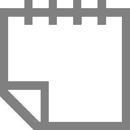
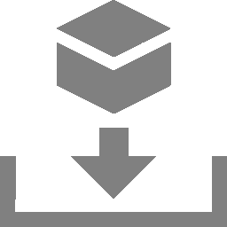
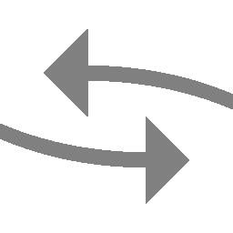

In information technology, compliance is the most important approach for organizations to protect and secure their information and assets.
Information security organizations and associations such as the Information Systems Audit and Control Association (ISACA) or the Center for Internet Security (CIS) publish IT security
standards, frameworks and guidelines.
Those require organizations to implement appropriate security measures to protect themselves and their information assets from attacks.
Vulnerability assessment systems such as the Greenbone Enterprise Appliance can assist in evaluating the IT security arrangements by performing audits based on policies.
The Chapters 11.4, 11.5 and 11.6 show some examples for policy audits.
Note
Since the goal of most audits is to verify local security configurations on the target systems, it is generally and in case of doubt recommended to perform authenticated
audits (see Chapter 9.3.2).
Exceptions exist for audits that only check externally available services, for example SSL/TLS.
Policies are scan configurations with the flag policy.
All default policies by Greenbone are data objects that are distributed via the feed.
They are downloaded and updated with each feed update.
If no default policies are available, a feed update may be necessary, or the Feed Import Owner may need to be set (see Chapter 6.2.1.10.1).
Default policies cannot be edited.
Furthermore, they can only be deleted temporarily by the Feed Import Owner or by a super administrator.
During the next feed update, they will be downloaded again.
Note
To permanently delete a default policy, the Feed Import Owner has to delete it.
Afterwards the Feed Import Owner has to be changed to (Unset) (see Chapter 6.2.1.10.1).
In addition to the default policies, custom policies can be created (see Chapter 11.1.1) or imported (see Chapter 11.1.2).
→ The policy is created and displayed on the page Policies.
In the row of the policy, click .
Note
The search bar in the upper part of the dialog can be used to search for VT families, scanner preferences and VT preferences.
In the sections Edit Network Vulnerability Test Families select the radio button if newly introduced VT families should be included and activated automatically (see Fig. 11.2).
In the section Edit Network Vulnerability Test Families activate the checkboxes in the column Select all NVTs if all VTs of a family should be activated.
If system-specific VTs of the VT family Policy are used (for example, beginning with “Linux”, “Microsoft Windows”, “Microsoft Office”),
the radio button Yes has to be selected for Verbose Policy Controls in the VT Compliance Tests (VT family Compliance).
Note
If editing the VT includes uploading a text file, the file should use UTF-8 text encoding.
Fig. 11.6 Page Policies displaying all available policies¶
For all policies the following information is displayed:
Name
Name of the policy.
For all policies the following actions are available:
Move the policy to the trashcan. Only policies which are currently not used can be moved to the trashcan. As long as the policy is not deleted from the trashcan, it is not downloaded anew during the next feed update.
Edit the policy. Only self-created policies which are currently not used can be edited.
Clone the policy.
Create a new audit for the policy (see Chapter 11.2.1.2).
Export the policy as an XML file.
Note
By clicking or below the list of policies more than one policy can be moved to the trashcan or exported at a time.
The drop-down list is used to select which policies are moved to the trashcan or exported.
Details Page
Click on the name of a policy to display the details of the policy. Click to open the details page of policy.
The following registers are available:
Information
General information about the policy.
Scanner Preferences
All scanner preferences for the policy with current and default values.
NVT Families
All VT families for the policy with the number of activated VTs and the trend.
Edit the policy. Only self-created policies which are currently not used can be edited.
Move the policy to the trashcan. Only policies which are currently not used can be moved to the trashcan. As long as the policy is not deleted from the trashcan, it is not downloaded anew during the next feed update.
→ The audit is created and displayed on the page Audits.
The following information can be entered:
Name
The name can be chosen freely. A descriptive name should be chosen if possible.
Comment
The optional comment allows for the entry of background information. It simplifies understanding the configured audit later.
Scan Targets
Select a previously configured target from the drop-down list (see Chapter 9.2.1).
Additionally, the target can be created on the fly by clicking next to the drop-down list.
Alerts
Select a previously configured alert from the drop-down list (see Chapter 9.12).
Status changes of an audit can be communicated via e-mail, Syslog, HTTP or a connector.
Additionally, an alert can be created on the fly by clicking next to drop-down list.
Schedule
Select a previously configured schedule from the drop-down list (see Chapter 9.10).
The audit can be run once or repeatedly at a predetermined time, for example every Monday morning at 6:00 am.
Additionally, a schedule can be created on the fly by clicking next to the drop-down list.
Add results to Assets
Selecting this option will make the systems available to the appliance’s asset management automatically (see Chapter 12).
This selection can be changed at a later point as well.
Alterable Audit
Allow for modification of the audits’s scan target(s) and scanner, even if reports were already created.
The consistency between reports can no longer be guaranteed if audits are altered.
Auto Delete Reports
This option may automatically delete old reports. The maximum number of reports to store can be configured. If the maximum is exceeded, the oldest report is automatically deleted.
The factory setting is Do not automatically delete reports.
Policy
The appliance comes with several pre-configured policies.
Only one policy can be configured per audit.
Order for target hosts
Select in which order the specified target hosts are processed during vulnerability tests.
Available options are:
Sequential
Random
Reverse
In order to improve the scan progress estimation, the setting Random is recommended (see Chapter 16.2.3).
This setting does not affect the alive test during which active hosts in a target network are identified. The alive test is always random.
Maximum concurrently executed NVTs per host/Maximum concurrently scanned hosts
Select the speed of the scan on one host.
The default values are chosen sensibly.
If more VTs run simultaneously on a system or more systems are scanned at the same time, the scan may have a negative impact on either the performance of the scanned systems, the network or the appliance itself. These values “maxhosts” and “maxchecks” may be tweaked.
The report of an audit can be displayed as soon as the audit has been started by clicking the bar in the column Status.
For reading, managing and downloading audit reports see Chapter 11.3.
As soon as the status changes to Done the complete audit report is available.
At any the time the intermediate results can be reviewed (see Chapter 11.3.1).
Note
It can take a while for the audit to complete.
The page is refreshing automatically if new data is available.
Fig. 11.8 Page Audits displaying all available audits¶
For all audits the following information is displayed:
Name
Name of the audit.
The following icons may be displayed:
The audit is marked as alterable. The audit’s scan target(s) and scanner can be edited, even if reports were already created.
The audit is configured to run on a remote scanner (see Chapter 15).
The audit is visible to one or more other user(s).
The audit is owned by another user.
Status
Current status of the audit. The following status bars are possible:
There are no runs/reports for the audit.
The audit was just started.
The appliance is preparing the scan.
Audits with this status cannot be stopped, resumed, or deleted.
The audit was added to the waiting queue.
In some cases, it may remain in the queue.
For more information see Chapter 16.3.
The audit is currently running.
The percent value is based on the number of VTs executed on the selected hosts.
For this reason the value does not necessarily correlate with the time spent.
The scan is complete and the appliance is processing data.
Audits with this status cannot be stopped, resumed, or deleted.
The audit has been completed successfully.
The audit was requested to stop recently.
However, the scan engine has not yet reacted to this request yet.
Audits with this status cannot be stopped, resumed, or deleted.
The audit was stopped.
The latest report is possibly not yet complete.
Other reasons for this status could be the reboot of the appliance or a power outage.
After restarting the scanner, the audit will be resumed automatically.
When resuming a scan, all unfinished hosts are scanned completely anew.
The data of hosts that were already fully scanned is kept.
The audit was deleted.
The actual deletion process can take some time as reports need to be deleted as well.
Audits with this status cannot be stopped, resumed, or deleted.
An error has occurred and the audit was interrupted.
The latest report is possibly not complete yet or is missing completely.
Report
Date and time of the latest report. By clicking it the details page of the latest report is opened.
Compliance Percentage
Relation of requirements identified as compliant to the number of all results (sum of requirements identified as compliant, non-compliant and incomplete).
For all audits the following actions are available:
Start the audit. Only currently not running audits can be started.
Stop the currently running audit. All discovered results will be written to the database.
Show details of the assigned schedule (only available for scheduled audits, see Chapter 9.10).
Resume the stopped audit. All unfinished hosts are scanned completely anew. The data of hosts that were already fully scanned is kept.
Move the audit to the trashcan.
Edit the audit.
Clone the audit.
Export the audit as an XML file.
Download the report of the audit as a GCR file (Greenbone Compliance Report as PDF format).
Note
By clicking or below the list of audits more than one audit can be moved to the trashcan or exported at a time. The drop-down list is used to select which audits are moved to the trashcan or exported.
Details Page
Click on the name of an audit to display the details of the audit. Click to open the details page of the audit.
The results of an audit are summarized in a report.
Audit reports can be displayed on the web interface and downloaded as PDF.
The appliance saves all reports of all audits in a local database.
Not only the last report of an audit is saved but all reports of all audits ever run.
This allows access to information from the past.
The audit reports contain information about which security requirements are met on the target system.
Once an audit has been started, the report of the results found so far can be viewed.
When an audit is completed, the status changes to Done and no more results will be added.
All existing reports for all audits can be displayed by selecting Resilience > Compliance Audit Reports in the menu.
Note
The latest report for a specific audit can be opened by clicking on the date in the column Report on the Compliance Audits page.
For all audit reports, the following information is displayed:
Date
Date and time of report creation.
Status
Status of the corresponding audit.
Task
Corresponding audit.
Compliant
Overall compliance assessment based on the met requirements.
: all security requirements are met, there are no requirements that are not met or only met partly.
: there is at least one security requirement that is only met partly, but there are no requirements that are not met at all.
: there is at least one security requirement that is not met.
Otherwise, the status is .
Yes/No/Incomplete
Number of found results for each compliance level.
Yes: the security requirement is met.
Incomplete: the security requirement is only met partly.
No: the security requirement is not met at all.
For all audit reports the following actions are available:
By clicking below the list of audit reports more than one audit report can be deleted at a time. The drop-down list is used to select which audit reports are deleted.
Click on the date of an audit report to display the details of the report.
The following registers are available:
Information
General information about the corresponding audit.
Results
List of all results in this audit report (see Chapter 11.3.1.1).
Hosts
Scanned hosts with host names and IP addresses.
The detected operating systems, the number of found vulnerabilities for each compliance level and the overall compliance assessment of the target system are displayed.
Operating Systems
Scanned operating systems with system name, host name, number of scanned hosts and overall compliance assessment of the target system.
Fig. 11.9 Register Results showing a list of discovered vulnerabilities¶
For every result the following information is displayed:
Vulnerability
Name of the found vulnerability. By clicking on the name of a vulnerability details of the vulnerability are shown (see Fig. 11.10).
The details page of the vulnerability is opened by clicking .
Vulnerabilities with an attached note are marked with .
Vulnerabilities with an attached ticket are marked with .
Note
If the column of the vulnerability still appears empty the respective VT has not been updated yet.
Fig. 11.10 Detailed information about the vulnerability¶
Solution type
Type of measure to remedy the vulnerability.
The following solution types exist:
 Vendor fix: Information is available about an official fix that is issued by the original vendor of the affected product.
Unless otherwise noted, it is assumed that this fix fully resolves the vulnerability.
Workaround: Information about a configuration or specific deployment scenario that can be used to avoid exposure to the vulnerability is available.
This is usually the “first line of defense” against a new vulnerability before a mitigation or vendor fix has been issued or even discovered.
 Mitigation: Information about a configuration or specific deployment scenario that helps to reduce the risk of the vulnerability is available but that does not resolve the vulnerability on the affected product.
Will not fix: There is no fix for the vulnerability and there never will be one.
This is often the case when a product has been orphaned, is no longer maintained or otherwise deprecated.
Information should contain details about why there will be no fix issued.
None: Currently there is no fix available.
Information should contain details about why there is no fix.
Compliant
Assessment of whether the security requirement is met.
: the security requirement is met.
: the security requirement is only met partly.
: the security requirement is not met at all.
Otherwise, the status is .
QoD
Short for “Quality of Detection”.
The QoD describes the reliability of the executed vulnerability detection.
It is a value between 0 % and 100 %, with 100 % being the most reliable.
By default, only results that were detected by VTs with a QoD of 70 % or higher are displayed.
The filter can be adjusted to show results with a lower QoD (see Chapter 7.3.1).
Host for which the result was found. The IP address and the name of the host are displayed separately.
Location
Port number and protocol type used to find the vulnerability on the host.
EPSS
Measure of a vulnerability’s likelihood of exploitation according to the Exploit Prediction Scoring System (EPSS) (see Chapter 13.2.4).
The score indicates the probability of attempts to exploit a vulnerability being observed in the next 30 days and is a number between 0 and 1.
The higher the value, the greater the probability that a vulnerability will actually be exploited.
The percentile indicates the proportion of vulnerabilities that were rated the same or lower than the vulnerability.
This helps putting the score into context.
An audit reports must always be exported in the report format Greenbone Compliance Report PDF (GCR PDF).
Exporting it in any other report format will result in an empty report.
An audit report can be exported as follows:
Select Resilience > Compliance Audit Reports in the menu.
Click on the date of an audit report to open the details page of the audit report.
Click .
→ The report content composer is opened.
Note
The applied filter is displayed in the input box Results Filter and cannot be changed. For changing the filter see Chapter 11.3.1.2.
Activate the checkbox Notes to include attached notes.
Select the report format GCR PDF in the drop-down list Report Format.
Note
Report configurations are not supported for the report format GCR PDF.
For this reason, the drop-down list Report Config is not relevant.
Activate the checkbox Store as default to save the settings for future exports.
When performing policy scans, there are groups of four VTs in the VT family Policy that can be configured accordingly.
At least the base VT and one additional VT are required to run a policy scan.
The four VT types are:
Base
This VT performs the actual scan of the policy.
Errors
This VT summarizes any items in which some errors occurred when running the base VT.
Matches
This VT summarizes any items which match the checks performed by the base VT.
Violations
This VT summarizes any items which did not match the checks performed by the base VT.
Note
The base VT must always be selected for a policy check since it performs the actual tests.
The other three VTs may be selected according to the needs.
For example, if matching patterns are of no concern then only a VT of the type Violations should be selected additionally.
File content checks belong to policy audits which do not explicitly test for vulnerabilities but rather test the compliance of file contents (for example configuration files) regarding a given policy.
The appliance provides a policy module to check if a file content is compliant with a given policy.
In general, this is an authenticated scan, which means that the scan engine will have to log into the target system to perform the check (see Chapter 9.3).
The file content check can only be performed on systems supporting the command grep. Normally this means Linux or Linux-like systems.
Four different VTs in the VT family Policy provide the file content check:
File Content: this VT performs the actual file content check.
File Content: Errors: this VT shows the files in which errors occurred (for example the file is not found on the target system).
File Content: Matches: this VT shows the patterns and files which passed the file content check (the predefined pattern matches in the file).
File Content: Violations: this VT shows the patterns and files which did not pass the file content check (the predefined pattern does not match in the file).
This file must contain the row filename|pattern|presence/absence.
The subsequent rows each contain a test entry.
Each row contains three fields which are separated by |.
The first field contains the path and file name, the second field contains the pattern to check (as a regular expression) and the third field indicates if a pattern has to be present or absent.
Select Resilience > Compliance Policies in the menu.
In the row of the desired policy, click .
→ The cloned policy is displayed on the page Policies.
In the row of the cloned policy, click .
In the section Edit Network Vulnerability Test Families click for the VT family Policy.
→ All VTs that allow special configuration are listed (see Fig. 11.12).
Activate the checkbox Upload file (see Fig. 11.13).
Tip
If a reference file was already uploaded, the checkbox Replace existing file is displayed instead.
The possibility to change the reference file is only available if the policy is currently not used.
The VTs of the type Violations have a default severity of 10.
This default severity can be changed using overrides (see Chapter 10.8).
By sectioning into three different VTs, it is possible to create distinct overrides for the severity according to the needs.
In the following example the severities of File Content: Violations and File Content: Errors have been changed which will be shown in the reports accordingly (see Fig. 11.14).
The registry is a database in Microsoft Windows containing important information about system hardware, installed programs, settings and user accounts on the computer.
Microsoft Windows continually refers to the information in the registry.
Due to the nature of the Microsoft Windows registry every program/application installed under Microsoft Windows will register itself in the Microsoft Windows registry.
Even malware and other malicious code usually leave traces within the registry.
The registry can be utilized to search for specific applications or malware related information such as version levels and numbers.
Also, missing or changed registry settings could point to a potential security policy violation on an endpoint.
The appliance provides a policy module to verify registry entries on target systems.
This module checks for the presence or absence of registry settings as well as registry violations.
Since the registry is unique to Microsoft Windows systems, this check can only be run on these systems.
To access the registry on the target system an authenticated scan has to be run.
Four different VTs in the VT family Policy provide the registry content check:
Windows Registry Check: this VT performs the actual registry content check on the files.
Windows Registry Check: Errors: this VT shows the files in which errors occurred (for example registry content not found on the target system).
Windows Registry Check: OK: this VT shows the registry settings which passed the registry check (right registry content).
Windows Registry Check: Violations: this VT shows the registry content which did not pass the registry check (wrong registry content).
This file must contain the row Present|Hive|Key|Value|ValueType|ValueContent.
The subsequent rows each contain a test entry.
Each row contains six fields which are separated by |.
The first field sets whether a registry entry should be present or not, the second the hive the registry entry is located in, the third the key, the fourth the value, the fifth the value type and the sixth the value content. If a star * is used in the last column any value is valid and accepted for existence or non-existence.
Select Resilience > Compliance Policies in the menu.
In the row of the policy Microsoft Windows Registry Check, click .
→ The cloned policy is displayed on the page Policies.
In the row of the cloned policy, click .
In the section Edit Network Vulnerability Test Families click for the VT family Policy.
→ All VTs that allow special configuration are listed (see Fig. 11.15).
Activate the checkbox Upload file (see Fig. 11.16).
Tip
If a reference file was already uploaded, the checkbox Replace existing file is displayed instead. The possibility to change the reference file is only available if the policy is currently not used.
The VTs of the type Violations have a default severity of 10.
This default severity can be changed using overrides (see Chapter 10.8).
By sectioning into three different VTs, it is possible to create distinct overrides for the severity according to the needs.
In the following example the severities of Windows Registry Check: Violations and Windows Registry Check: Errors have been changed which will be shown in the reports accordingly (see Fig. 11.17).
File checksum checks belong to policy audits which do not explicitly test for vulnerabilities but rather for file integrity.
The appliance provides a policy module to verify file integrity on target systems.
This module checks the file content by MD5 or SHA1 checksums.
In general, this is an authenticated check, which means that the scan engine will have to log into the target system to perform the check.
The file checksum check can only be performed on systems supporting checksums. Normally this means Linux or Linux-like systems.
However, the appliance provides a module for checksum checks for Microsoft Windows systems as well (see Chapter 11.4.3.3).
Four different VTs in the VT family Policy provide the file checksum check:
File Checksums: this VT performs the actual checksum check on the files.
File Checksums: Errors: this VT shows the files in which errors occurred (for example file not found on the target system).
File Checksums: Matches: this VT shows the files which passed the checksum check (checksum matches).
File Checksums: Violations: this VT shows the files which did not pass the checksum check (wrong checksum).
This file must contain the row Checksum|File|Checksumtype.
The subsequent rows each contain a test entry.
Each row contains three fields which are separated by |.
The first field contains the checksum in hex, the second field the path and file name and the third field the checksum type.
Currently MD5 and SHA1 checksums are supported.
Important
Checksums and checksum types must be lowercase.
Select Resilience > Compliance Policies in the menu.
In the row of the desired policy, click .
→ The cloned policy is displayed on the page Policies.
In the row of the cloned policy, click .
In the section Edit Network Vulnerability Test Families click for the VT family Policy.
→ All VTs that allow special configuration are listed (see Fig. 11.18).
Activate the checkbox Upload file (see Fig. 11.19).
Tip
If a reference file was already uploaded, the checkbox Replace existing file is displayed instead. The possibility to change the reference file is only available if the policy is currently not used.
The VTs of the type Violations have a default severity of 10.
This default severity can be changed using overrides (see Chapter 10.8).
By sectioning into three different VTs, it is possible to create distinct overrides for the severity according to the needs.
In the following example the severities of File Checksum: Violations and File Checksum: Errors have been changed which will be shown in the reports accordingly (see Fig. 11.20).
11.4.3.3 Checking File Checksum Patterns for Microsoft Windows¶
The appliance provides a similar module for Microsoft Windows systems for file checksum checks.
Since Microsoft Windows does not provide an internal program for creating checksums it has to be installed one either manually or automatically by the VT.
The appliance uses ReHash for creating checksums on Microsoft Windows systems.
Note
There are two operating modes for these checks:
Using a tool that was installed on the target system manually.
The tool ReHash will automatically be installed and deinstalled as well if requested on the target system during the checking routine.
As for Linux systems the VTs for checksum checks are located in the VT family Policy.
Create a reference file with the patterns to check. Following is an example:
For Delete hash test Programm after the test select the radio button Yes if the checksum program ReHash should be deleted after the check (see Fig. 11.22).
Tip
The program can be left on the target system, for example to speed up recurring tests and therefore does not have to be transferred each time.
For Install hash test Programm on the Target select the radio button Yes if the checksum program ReHash should be installed on the target system automatically.
Note
If it is not installed automatically, it has to be installed manually under C:\Windows\system32 (on 32-bit systems) or C:\Windows\SysWOW64 (on 64-bit systems) and has to be executable for the authenticated user.
Activate the checkbox Upload file.
Tip
If a reference file was already uploaded, the checkbox Replace existing file is displayed instead. The possibility to change the reference file is only available if the policy is currently not used.
Click Browse… and select the previously created reference file.
For detailed information about Common Platform Enumeration (CPE) see Chapter 13.2.2.
11.4.4.1 Simple CPE-Based Checks for Security Policies¶
With any executed scan, CPEs for the identified products are stored.
This happens independently of whether the product actually reveals a security problem or not.
On this basis it is possible to describe simple security policies and the checks for compliance with these.
With the Greenbone Enterprise Appliance, it is possible to describe policies to check for the presence as well as for the absence of a product.
These cases can be associated with a severity to appear in the scan report.
The examples demonstrate how to check the compliance of a policy regarding specific products in an IT infrastructure and how the reporting with the corresponding severity can be done.
The information about whether a certain product is present on the target system is gathered by a single Vulnerability Test (VT) or even independently by a number of special VTs.
This means that for a certain product an optimized policy that only concentrates on this product and does not do any other scan activity can be specified.
11.4.4.2 Detecting the Presence of Problematic Products¶
This example demonstrates how the presence of a certain product in an IT infrastructure is classified as a severe problem and reported as such.
Select Resilience > Compliance Policies in the menu.
Create a new policy by clicking .
Define the name of the policy.
Click Save.
→ The policy is created and displayed on the page Policies.
In the row of the policy, click .
In the row of the VT family Policy, click .
In the row of the VT CPE Policy Check, click .
Either a single CPE or multiple CPEs can be searched for at the same time.
Enter a single CPE in the input box Single CPE, for example cpe:/a:microsoft:ie:6 (see Fig. 11.23).
or
Activate the checkbox Upload file, click Browse… and select a file containing a list of CPEs.
Note
The file must be a text file in which the CPEs are separated by commas or line breaks.
The problematic product should not be present, which means that the condition must be set to missing.
However, if the product is discovered, this is evaluated as critical.
Activate the checkbox Selected for the following VTs: CPE Policy Check, CPE-based Policy Check Error, CPE-based Policy Check OK and CPE-based Policy Check Violations.
Click Save to save the family of VTs.
Activate the checkbox Selected for the VT family Product Detection (see Fig. 11.24).
In case the mere availability of a product should be considered, it is required to configure remote access using credentials to apply local security checks (see Chapter 9.3.2).
If just running network services should be searched, it normally does not help but rather increases the number of false positives.
Create a new target (see Chapter 9.2.1), create a new audit (see Chapter 11.2.1.1) and run the audit (see Chapter 11.2.2).
When creating the audit, use the previously created policy.
When the scan is completed select Scans > Reports in the menu.
Tip
To show only the results of the CPE-based policy checks, a suitable filter can be applied.
Enter cpe in the input box Filter.
→ The reports for CPE-based policy checks are displayed.
Click on the date of a report.
→ The report for CPE-based policy checks is displayed.
The report can be used as described in Chapter 10.2.1.
Note
The VTs of the type Violations have a default severity of 10.
This default severity can be changed using overrides (see Chapter 10.8).
If the problematic product is found on one of the target systems, it is reported as a problem.
Greenbone provides a policy for testing the compliance with the following modules of the IT-Grundschutz Compendium:
SYS.1.2.2 Windows Server 2012
SYS.1.3 Server on Linux and Unix
SYS.2.2.2 Clients on Windows 8.1
SYS.2.2.3 Clients on Windows 10
SYS.2.3 Clients on Linux and Unix
An IT-Grundschutz scan can be carried out as follows:
Create a new target (see Chapter 9.2.1), create a new audit (see Chapter 11.2.1.1) and run the audit (see Chapter 11.2.2).
When creating the audit, use the policy IT-Grundschutz Kompendium.
When the scan is completed select Scans > Reports in the menu.
Click on the date of the report.
→ The report for the IT-Grundschutz scan is displayed.
The report can be used as described in Chapter 10.2.1.
The report contains detailed information about compliant, not compliant and incomplete requirements.
To export the report click .
For Include activate the checkbox Notes to include attached notes and the checkbox Overrides to label enabled overrides and include their text field (see Chapter 10.2.2).
Select GCR PDF in the drop-down list Report Format.
Click OK and download the PDF file.
11.5.2 BSI TR-03116: Kryptographische Vorgaben für Projekte der Bundesregierung¶
The German Federal Office for Information Security (BSI) published a technical guideline TR-03116: Kryptographische Vorgaben für Projekte der Bundesregierung.
Part 4 of this guideline describes the security requirements for services of the federal government using the cryptographic protocols SSL/TLS, S/MIME and OpenPGP.
The requirements are based on forecasts for the security of the algorithms and key lengths for the next years.
Greenbone provides a policy for testing the compliance of services with the technical guideline “TR-03116”.
The policy tests if the scanned hosts and services use SSL/TLS. If this is the case, the compliance with the guideline is tested.
The policy states three main requirements:
TLS version
TLS versions lower than 1.2 are not allowed.
Supported ciphers
If TLS 1.2 is enabled, one of the following ciphers has to be supported:
TLS_ECDHE_ECDSA_WITH_AES_128_CBC_SHA256
TLS_ECDHE_RSA_WITH_AES_128_CBC_SHA256
TLS_ECDHE_ECDSA_WITH_AES_128_GCM_SHA256
TLS_ECDHE_RSA_WITH_AES_128_GCM_SHA256
If TLS 1.3 is enabled, cipher TLS_AES_128_GCM_SHA256 has to be supported.
Allowed cipher suites
If TLS 1.2 is enabled, only the following cipher suites are allowed:
TLS_ECDHE_ECDSA_WITH_AES_128_CBC_SHA256
TLS_ECDHE_ECDSA_WITH_AES_128_GCM_SHA256
TLS_ECDHE_ECDSA_WITH_AES_256_CBC_SHA384
TLS_ECDHE_ECDSA_WITH_AES_256_GCM_SHA384
TLS_ECDHE_ECDSA_WITH_AES_128_CBC_SHA
TLS_ECDHE_ECDSA_WITH_AES_256_CBC_SHA
TLS_ECDHE_RSA_WITH_AES_128_CBC_SHA256
TLS_ECDHE_RSA_WITH_AES_128_GCM_SHA256
TLS_ECDHE_RSA_WITH_AES_256_CBC_SHA384
TLS_ECDHE_RSA_WITH_AES_256_GCM_SHA384
TLS_DHE_RSA_WITH_AES_128_CBC_SHA256
TLS_DHE_RSA_WITH_AES_256_CBC_SHA256
TLS_DHE_RSA_WITH_AES_128_GCM_SHA256
TLS_DHE_RSA_WITH_AES_256_GCM_SHA384
TLS_ECDHE_RSA_WITH_AES_128_CBC_SHA
TLS_ECDHE_RSA_WITH_AES_256_CBC_SHA
TLS_DHE_RSA_WITH_AES_128_CBC_SHA
TLS_DHE_RSA_WITH_AES_256_CBC_SHA
If TLS 1.3 is enabled, only the following cipher suites are allowed:
TLS_AES_128_GCM_SHA256
TLS_AES_256_GCM_SHA384
TLS_AES_128_CCM_SHA256
A BSI TR-03116 scan can be carried out as follows:
Create a new target (see Chapter 9.2.1), create a new audit (see Chapter 11.2.1.1) and run the audit (see Chapter 11.2.2).
When creating the audit, use the policy BSI TR-03116: Part 4.
When the scan is completed select Scans > Reports in the menu.
Click on the date of the report.
→ The report for the BSI TR-03116 scan is displayed.
The report can be used as described in Chapter 10.2.1.
The report contains detailed information about compliant, not compliant and incomplete requirements.
To export the report click .
For Include activate the checkbox Notes to include attached notes and the checkbox Overrides to label enabled overrides and include their text field (see Chapter 10.2.2).
Select GCR PDF in the drop-down list Report Format.
Click OK and download the PDF file.
11.5.3 BSI TR-02102: Kryptographische Verfahren: Empfehlungen und Schlüssellängen¶
Greenbone provides a policy for testing the compliance of services with the technical guideline “TR-02102”.
The following SSH settings in the file /etc/ssh/sshd_config are tested in the policy:
Protocol (OID: 1.3.6.1.4.1.25623.1.0.150066): SSH version 2 has to be used.
KexAlgorithms (OID: 1.3.6.1.4.1.25623.1.0.150077): the following algorithms are allowed for key exchange during SSH connection establishment: diffie-hellman-group-exchange-sha256, diffie-hellman-group14-sha256, diffie-hellman-group15-sha512, diffie-hellman-group16-sha512, rsa2048-sha256, ecdh-sha2-*
ReKeyLimit (OID: 1.3.6.1.4.1.25623.1.0.150560): the key material of a connection must be renewed after 1 hour or 1 GiB of transferred data.
Ciphers (OID: 1.3.6.1.4.1.25623.1.0.150225): the following encryption methods are allowed: AEAD_AES_128_GCM, AEAD_AES_256_GCM, aes256-cbc, aes192-cbc, aes128-cbc, aes128-ctr, aes192-ctr, aes256-ctr
MACs (OID: 1.3.6.1.4.1.25623.1.0.109795): the following MACs are allowed: hmac-sha1, hmac-sha2-256, hmac-sha2-512
HostKeyAlgorithms (OID: 1.3.6.1.4.1.25623.1.0.150559): the following methods for server authentication are allowed: pgp-sign-rsa, pgp-sign-dss, ecdsa-sha2-, x509v3-rsa2048-sha256, x509v3-ecdsa-sha2-
AuthenticationMethods (OID: 1.3.6.1.4.1.25623.1.0.150561): the public key authentication (publickey) has to be used.
PubkeyAuthentication (OID: 1.3.6.1.4.1.25623.1.0.150222): the public key authentication (publickey) has to be allowed.
A BSI TR-02102 scan can be carried out as follows:
Create a new target (see Chapter 9.2.1), create a new audit (see Chapter 11.2.1.1) and run the audit (see Chapter 11.2.2).
When creating the audit, use the policy BSI TR-02102-4.
When the scan is completed select Scans > Reports in the menu.
Click on the date of the report.
→ The report for the BSI TR-02102 scan is displayed.
The report can be used as described in Chapter 10.2.1.
The report contains detailed information about compliant, not compliant and incomplete requirements.
To export the report click .
For Include activate the checkbox Notes to include attached notes and the checkbox Overrides to label enabled overrides and include their text field (see Chapter 10.2.2).
Select GCR PDF in the drop-down list Report Format.
The TLS (Transport Layer Security) protocol ensures the confidentiality, authenticity and integrity of communication in insecure networks.
It establishes confidential communication between sender and receiver, for example web server and web browser.
With the Greenbone Enterprise Appliance, it is possible to identify systems that offer services using SSL/TLS protocols.
Additionally, the appliance detects the protocol versions and offers encryption algorithms.
Further details about the service can be achieved in case it can be properly identified.
11.6.1 Checking for TLS and Exporting the Scan Results¶
For an overview on TLS usage in the network or on single systems, Greenbone recommends using the scan configuration TLS-Map.
This scan configuration identifies the used protocol versions and the offered encryption algorithms. Additionally, it tries to identify in-depth details of the service.
Select Configuration > Port Lists in the menu to have a look at the pre-configured port lists.
Note
By clicking own port lists can be created (see Chapter 9.7.1).
Choose a suitable list of ports that should be scanned.
Note
Pay attention that all ports of interest are covered by the list.
The more extensive the list, the longer the scan will take but this may also detect services at unusual ports.
The TLS protocol is mainly based on TCP.
A port list with UDP ports will slow down the scan without benefits.
If any TCP ports should be covered All TCP should be selected.
Create a new target (see Chapter 9.2.1), create a new task (see Chapter 9.2.2) and run the task (see Chapter 9.2.3).
When creating the task, use the scan configuration TLS-Map.
When the scan is completed select Scans > Reports in the menu.
Click on the date of the report.
→ The report for the TLS-Map scan is displayed.
The report can be used as described in Chapter 10.2.1.
To export the report click .
For Include activate the checkbox Notes to include attached notes and the checkbox Overrides to label enabled overrides and include their text field (see Chapter 10.2.2).
Select TLS Map in the drop-down list Report Format.
Click OK and download the CSV file.
→ The report can be used in spreadsheet applications.
The file contains one line per port and systems where an SSL/TLS protocol is offered:
{kind=link}
{kind=link}
{kind=link}
{kind=link}
{kind=link}
{kind=link}
{kind=link}

{kind=link}
{kind=link}
{kind=link}
{kind=link}
{kind=link}
{kind=link}
{kind=link}
{kind=link}
{kind=link}
{kind=link}
{kind=link}
{kind=link}
 The audit was deleted.
The actual deletion process can take some time as reports need to be deleted as well.
Audits with this status cannot be stopped, resumed, or deleted.
The audit was deleted.
The actual deletion process can take some time as reports need to be deleted as well.
Audits with this status cannot be stopped, resumed, or deleted.{kind=link}
{kind=link}
{kind=link}
{kind=link}
{kind=link}
{kind=link}
{kind=link}
{kind=link}
{kind=link}
{kind=link}
{kind=link}
{kind=link}
{kind=link}
{kind=link}
{kind=link}
{kind=link}
{kind=link}
{kind=link}
{kind=link}
{kind=link}
{kind=link}
{kind=link}
 Create a delta report (see Chapter 10.2.5).
Create a delta report (see Chapter 10.2.5). Delete the report.
Delete the report.{kind=link}
{kind=link}
{kind=link}
{kind=link}
{kind=link}
{kind=link}
{kind=link}
{kind=link}
{kind=link}
{kind=link}
{kind=link}
{kind=link}
{kind=link}
{kind=link}
{kind=link}
{kind=link}
{kind=link}

{kind=link}
{kind=link}
{kind=link}
{kind=link}
{kind=link}
{kind=link}
{kind=link}
{kind=link}
{kind=link}
{kind=link}
{kind=link}
{kind=link}
{kind=link}